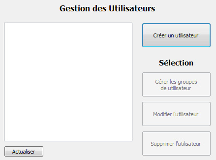
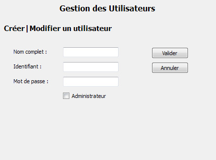
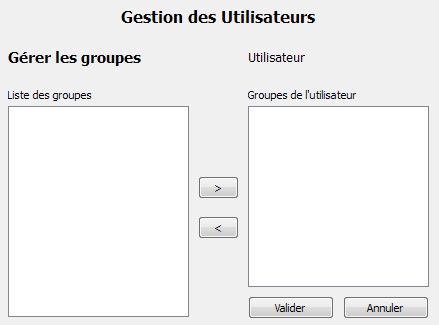

Documentation client
Administration : utilisateurs
L'interface de gestion des utilisateurs permet aux administrateurs de créer, modifier et supprimer des utilisateurs ainsi que de choisir les groupes auxquels un utilisateur appartient.

Les boutons de modification, suppression et gestion des groupes d'un utilisateur s'activent lors de la sélection d'un utilisateur dans la liste.
Créer ou modifier un utilisateur
Lors de la création d'un utilisateur, le nom, identifiant et mot de passe sont demandés. Une case à cocher permet d'indiquer si l'utilisateur est administrateur et peut avoir accès aux fonctions d'administration sur son interface.
Lors de la modification d'un utilisateur sélectionné dans la liste, le nom, identifiant et mot de passe actuels sont renseignés et peuvent être modifiés. Une case à cocher indique si l'utilisateur est administrateur et peut être modifiée.
Les interfaces de création et de modification d'un utilisateur sont identiques.

Supprimer un utilisateur
Lors de la suppression d'un utilisateur sélectionné dans la liste, ses informations sont supprimées de la base de données ainsi que ses liaisons éventuelles avec des groupes. S'il est actuellement connecté au système, l'utilisateur ne sera pas automatiquement déconnecté.
Gérer les groupes d'un utilisateur
La gestion des groupes de l'utilisateur sélectionné permet de choisir à quels groupes l'utilisateur appartient, et donc indirectement à quels mots de passe il aura accès.
L'interface présente la liste des groupes du système à gauche, et la liste des groupes de l'utilisateur à droite. Un groupe apparaissant dans la liste de droite n'apparait pas dans la liste de gauche.
Le bouton ">" permet d'ajouter le groupe sélectionné dans la liste de gauche aux groupes de l'utilisateur.
Le bouton "<" permet d'enlever le groupe sélectionné dans la liste de droite des groupes de l'utilisateur.
